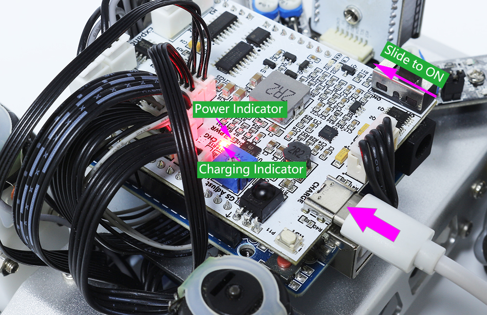

1. Basic Movements¶
You will learn how to make the Zeus Car move in all directions in this project.
{kind=link}
How to do?
First check that the Upload button is toggled to the side near the motor port.

Connect the Zeus Car to your computer with the blue USB cable. When you plug in your Arduino board, the computer automatically recognizes it and assigns it a COM port, which you can view in Device Manager.
Open the
1_basic_move.inofile under the path ofzeus-car-main\examples\1_basic_move. Or copy this code into Arduino IDE.<代码>
You can quickly select the board and port from this place.

Note
In case COMxx doesn’t appear, open the Board Manager from the left and make sure the “Arduino AVR Boards” core is installed.

Now click the Upload button to upload the code to the Arduino board. When it is finished, a notification pops up in the bottom right of your IDE window. Of course, sometimes there are some complications when uploading, and these errors will be listed here as well.
Note
If you get a “Compilation error: SoftPWM.h: No such file or directory” prompt, it means you don’t have the
SoftPWMlibrary installed.Please refer to Installing Libraries(Arduino IDE 2) to install the two required libraries
SoftPWMandIRLremote.
Let’s start the Zeus Car.
When first used or when the battery cable is unplugged, Zeus Car Shield will activate its over-discharge protection circuitry.
When you toggle the power switch ON, the power indicator will not light up, so you’ll need to plug in the Type-C cable for about 5 seconds.
If the power indicator lights up, it means that the protection status has been released. At this time look at the battery indicators, if both battery indicators are off, please continue to plug in the Type-C cable to charge the battery.

You will now see the Zeus Car move for one second in each direction.
How it works?
These movements are obtained by the 4 Mecanum Wheels cooperating together, for example, four wheels forward or backward at the same time can make the car also forward or backward, and two wheels forward and two wheels backward can cause the car to pan or rotate to the left or right.
Let’s look at how these movements are specifically achieved.
Moving forward and backward, panning left and right.

Diagonal panning

Rotate left and right